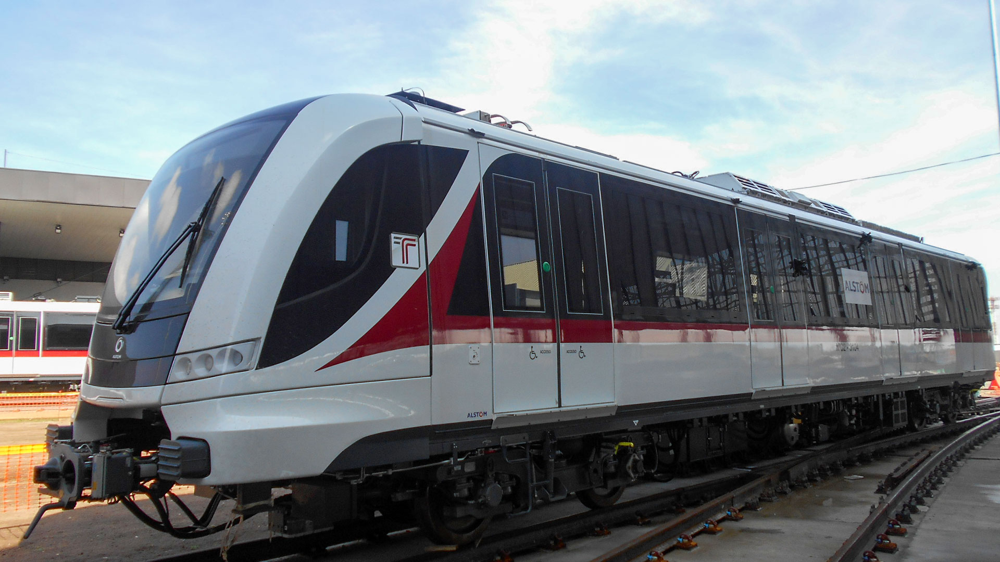

Somos la primera empresa española en realizar en el exterior un tramo de 206 km del tren de alta velocidad en la línea Ankara-Estambul (Turquía), en operación desde 2009; y en lograr el primer proyecto ferroviario en EEUU, AirportLink, que prolonga el metro de Miami hasta el aeropuerto internacional de esta ciudad del Estado de Florida.
También hemos contribuido a la mejora del metro de Nueva York, a través de nuestra filial Judlau que ha acometido destacados proyectos en el marco del The New Second Avenue Subway Program´s, entre los que se encuentran: las estaciones de las calles 63 y 72; la remodelación del complejo South Ferry Terminal y la rehabilitación del túnel de Canarsie, principal vía de conexión entre Brooklyn y Manhattan.
Latinoamérica
Hemos realizado el tranvía de Medellín, en Colombia, el más moderno de Latinoamérica, con una longitud de 4,3 km y pendiente de hasta el 12,5%, la mayor del sistema tranviario mundial. En México destacan el primer tramo del tren interurbano Toluca-Ciudad de México y el tercer tramo de la Línea 3 del Tren Ligero de Guadalajara. Asimismo, hemos acometido varios tramos para el Metro de Santiago de Chile en las Líneas 2, 3, 4 y 5, entre los que se encuentran la estación de Plaza Egaña y Dorsal además de la construcción del Metro de Valparaiso-Viña del Mar que en su conjunto suman más de 19 km en obras de túneles.
Asimismo, llevamos a cabo una ampliación de 2,2 km de la línea 1 de metro que une Panamá y Villa Zaíta. Las obras incluirán, además, una estación terminal en el extremo Norte de la línea, con una capacidad mayor de 10.000 pasajeros en hora punta. La compañía también construirá un intercambiador de autobuses con capacidad de más de 8.000 pasajeros y un aparcamiento con 800 plazas. Otro de los componentes del proyecto es la ampliación de la Vía Transístmica a seis carriles y un segmento destinado a tráfico con dos niveles, aparte de mejoras peatonales y paisajistas, las cuales se desarrollarán en la servidumbre existente.
Europa
En el ámbito de la alta velocidad española (AVE) contamos con 30 años de trayectoria y cerca de 200 proyectos ejecutados. El corredor norte-noroeste de la L.A.V. Madrid-Galicia (tramo túnel del Espiño. Vía Izquierda) o la plataforma de la L.A.V. Vitoria-Bilbao-San Sebastián (tramo Antzuola-Ezquio/Itxaso Este), entre otros.
En Noruega realizamos el EPC (Engineering, Procurement and Construction) Ski, orientado a la reconstrucción de la estación de ferrocarril de Ski y su ampliación para conectarla a la línea de alta velocidad Follo Line; y en Suecia trabajamos para mejorar la línea existente entre Lund y Arlöv (Malmö), una de las rutas de ferrocarril más transitadas del país.
En República Checa hemos participado en el desarrollo de corredores ferroviarios, a través de nuestra filial especializada ŽS, con más de 60 años de historia; y en Eslovenia, hemos realizado el tramo Dolga Gora-Poljčane, que contempla 7,5 kilómetros de doble vía.
Además, destacan los trabajos de G&O, filial especializada en la realización de infraestructuras, superestructuras y mantenimientos ferroviarios; y E&M Instalaciones, centrada en la ejecución de proyectos de electrificación ferroviaria e instalaciones eléctricas.
Nuestros proyectos
Metro de Barcelona L9. Tramos I y IV
Tren ligero Purple Line
OHLA logra un nuevo hito en EE.UU. en el marco del proyecto ferroviario de Elmont Station